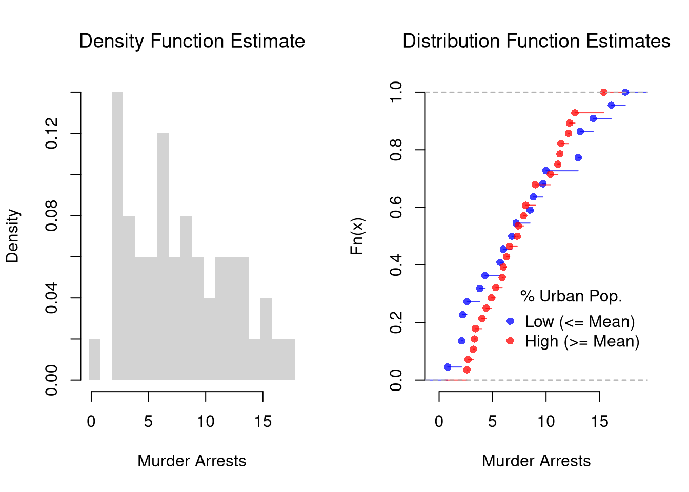

3 Data
3.1 Types
Basic Types.
The two basic types of data are cardinal and factor data. We can further distinguish between whether cardinal data are discrete or continuous. We can also further distinguish between whether factor data are ordered or not
- cardinal: the difference between elements always mean the same thing.
- discrete: E.g., 2-1=3-2.
- continuous: E.g., 2.11-1.4444=3.11-2.4444
- factor: the difference between elements does not always mean the same thing.
- ordered: E.g., First place - Second place ?? Second place - Third place.
- unordered (categorical): E.g., A - B ????
Here are some examples
Code
d1d <- 1:3 # Cardinal data (Discrete)
d1d
## [1] 1 2 3
#class(d1d)
d1c <- c(1.1, 2/3, 3) # Cardinal data (Continuous)
d1c
## [1] 1.1000000 0.6666667 3.0000000
#class(d1c)
d2o <- factor(c('A','B','C'), ordered=T) # Factor data (Ordinal)
d2o
## [1] A B C
## Levels: A < B < C
#class(d2o)
d2c <- factor(c('Leipzig','Los Angeles','Logan'), ordered=F) # Factor data (Categorical)
d2c
## [1] Leipzig Los Angeles Logan
## Levels: Leipzig Logan Los Angeles
#class(d2c)Note that for theoretical analysis, the types are sometimes grouped differently as
- continuous (continuous cardinal data)
- discrete (discrete cardinal, ordered factor, and unordered factor data)
Other Types.
R also allows for more unstructured data types, such as strings and lists. You often combine all of the different data types into a single dataset called a data.frame
Code
c('hello world', 'hi mom') # character strings
## [1] "hello world" "hi mom"
list(d1c, d2c) # lists
## [[1]]
## [1] 1.1000000 0.6666667 3.0000000
##
## [[2]]
## [1] Leipzig Los Angeles Logan
## Levels: Leipzig Logan Los Angeles
# data.frames: your most common data type
# matrix of different data-types
# well-ordered lists
d0 <- data.frame(y=d1c, x=d2c)
d0
## y x
## 1 1.1000000 Leipzig
## 2 0.6666667 Los Angeles
## 3 3.0000000 LoganNote that strings are encounter in a variety of settings, and you often have to format them after reading them into R.1
Code
# Strings
paste( 'hi', 'mom')
## [1] "hi mom"
paste( c('hi', 'mom'), collapse='--')
## [1] "hi--mom"
list(d1c, c('hello world'),
list(d1d, list('...inception...'))) # lists
## [[1]]
## [1] 1.1000000 0.6666667 3.0000000
##
## [[2]]
## [1] "hello world"
##
## [[3]]
## [[3]][[1]]
## [1] 1 2 3
##
## [[3]][[2]]
## [[3]][[2]][[1]]
## [1] "...inception..."
kingText <- "The king infringes the law on playing curling."
gsub(pattern="ing", replacement="", kingText)
## [1] "The k infres the law on play curl."
# advanced usage
#gsub("[aeiouy]", "_", kingText)
#gsub("([[:alpha:]]{3})ing\\b", "\\1", kingText) See
3.2 Densities and Distributions
Initial Data Inspection.
Regardless of the data types you have, you typically begin by inspecting your data by examining the first few observations.
Consider, for example, historical data on crime in the US.
Code
To further examine a particular variable, we look at its distribution. In what follows, we will denote the data for a single variable as \(\{X_{i}\}_{i=1}^{N}\), where there are \(N\) observations and \(X_{i}\) is the value of the \(i\)th one.
Histogram Density Estimate.
The histogram divides the range of \(\{X_{i}\}_{i=1}^{N}\) into \(L\) exclusive bins of equal-width \(h=[\text{max}(X_{i}) - \text{min}(X_{i})]/L\), and counts the number of observations within each bin. We often scale the counts to interpret the numbers as a density. Mathematically, for an exclusive bin with midpoint \(x\), we compute \[\begin{eqnarray} \widehat{f}_{HIST}(x) &=& \frac{ \sum_{i}^{N} \mathbf{1}\left( X_{i} \in \left[x-\frac{h}{2}, x+\frac{h}{2} \right) \right) }{N h}. \end{eqnarray}\] We compute \(\widehat{f}_{HIST}(x)\) for each \(x \in \left\{ \frac{\ell h}{2} + \text{min}(X) \right\}_{\ell=1}^{L}\).
Code

Note that if you your data are factor data, or discrete cardinal data, you can directly plot the counts.
Empirical Cumulative Distribution Function.
The ECDF counts the proportion of observations whose values \(X_{i}\) are less than \(x\); \[\begin{eqnarray} \widehat{F}_{ECDF}(x) = \frac{1}{N} \sum_{i}^{N} \mathbf{1}(X_{i} \leq x) \end{eqnarray}\] for each unique value of \(x\) in the dataset.
Code

Boxplots.
Boxplots summarize the distribution of data using quantiles: the \(q\)th quantile is the value where \(q\) percent of the data are below and (\(1-q\)) percent are above.
- The “median” is the point where half of the data has lower values and the other half has higher values.
- The “lower quartile” is the point where 25% of the data has lower values and the other 75% has higher values.
- The “min” is the smallest value (or largest negative value if there are any) where 0% of the data has lower values.
Code
x <- USArrests$Murder
# quantiles
median(x)
## [1] 7.25
range(x)
## [1] 0.8 17.4
quantile(x, probs=c(0,.25,.5))
## 0% 25% 50%
## 0.800 4.075 7.250
# deciles are quantiles
quantile(x, probs=seq(0,1, by=.1))
## 0% 10% 20% 30% 40% 50% 60% 70% 80% 90% 100%
## 0.80 2.56 3.38 4.75 6.00 7.25 8.62 10.12 12.12 13.32 17.40To compute quantiles, we sort the observations from smallest to largest as \(X_{(1)}, X_{(2)},... X_{(N)}\), and then compute quantiles as \(X_{ (q*N) }\). Note that \((q*N)\) is rounded and there are different ways to break ties.
Code
xo <- sort(x)
xo
## [1] 0.8 2.1 2.1 2.2 2.2 2.6 2.6 2.7 3.2 3.3 3.4 3.8 4.0 4.3 4.4
## [16] 4.9 5.3 5.7 5.9 6.0 6.0 6.3 6.6 6.8 7.2 7.3 7.4 7.9 8.1 8.5
## [31] 8.8 9.0 9.0 9.7 10.0 10.4 11.1 11.3 11.4 12.1 12.2 12.7 13.0 13.2 13.2
## [46] 14.4 15.4 15.4 16.1 17.4
# median
xo[length(xo)*.5]
## [1] 7.2
quantile(x, probs=.5, type=4)
## 50%
## 7.2
# min
xo[1]
## [1] 0.8
min(xo)
## [1] 0.8
quantile(xo,probs=0)
## 0%
## 0.8The boxplot shows the median (solid black line) and interquartile range (\(IQR=\) upper quartile \(-\) lower quartile; filled box),2 as well extreme values as outliers beyond the \(1.5\times IQR\) (points beyond whiskers).
Code

3.3 Joint Distributions
Scatterplots are used frequently to summarize the joint relationship between two variables. They can be enhanced in several ways. As a default, use semi-transparent points so as not to hide any points (and perhaps see if your observations are concentrated anywhere).
You can also add regression lines (and confidence intervals), although I will defer this until later.

Code
Marginal Distributions.
You can also show the distributions of each variable along each axis.
Code
# Setup Plot
layout( matrix(c(2,0,1,3), ncol=2, byrow=TRUE),
widths=c(9/10,1/10), heights=c(1/10,9/10))
# Scatterplot
par(mar=c(4,4,1,1))
plot(Murder~UrbanPop, USArrests, pch=16, col=rgb(0,0,0,.5))
# Add Marginals
par(mar=c(0,4,1,1))
xhist <- hist(USArrests$UrbanPop, plot=FALSE)
barplot(xhist$counts, axes=FALSE, space=0, border=NA)
par(mar=c(4,0,1,1))
yhist <- hist(USArrests$Murder, plot=FALSE)
barplot(yhist$counts, axes=FALSE, space=0, horiz=TRUE, border=NA)
3.4 Conditional Distributions
It is easy to show how distributions change according to a third variable using data splits. E.g.,
Code
# Tailored Histogram
ylim <- c(0,8)
xbks <- seq(min(USArrests$Murder)-1, max(USArrests$Murder)+1, by=1)
# Also show more information
# Split Data by Urban Population above/below mean
pop_mean <- mean(USArrests$UrbanPop)
murder_lowpop <- USArrests[USArrests$UrbanPop< pop_mean,'Murder']
murder_highpop <- USArrests[USArrests$UrbanPop>= pop_mean,'Murder']
cols <- c(low=rgb(0,0,1,.75), high=rgb(1,0,0,.75))
par(mfrow=c(1,2))
hist(murder_lowpop,
breaks=xbks, col=cols[1],
main='Urban Pop >= Mean', font.main=1,
xlab='Murder Arrests',
border=NA, ylim=ylim)
hist(murder_highpop,
breaks=xbks, col=cols[2],
main='Urban Pop < Mean', font.main=1,
xlab='Murder Arrests',
border=NA, ylim=ylim)
It is sometimes it is preferable to show the ECDF instead. And you can glue various combinations together to convey more information all at once
Code
par(mfrow=c(1,2))
# Full Sample Density
hist(USArrests$Murder,
main='Density Function Estimate', font.main=1,
xlab='Murder Arrests',
breaks=xbks, freq=F, border=NA)
# Split Sample Distribution Comparison
F_lowpop <- ecdf(murder_lowpop)
plot(F_lowpop, col=cols[1],
pch=16, xlab='Murder Arrests',
main='Distribution Function Estimates',
font.main=1, bty='n')
F_highpop <- ecdf(murder_highpop)
plot(F_highpop, add=T, col=cols[2], pch=16)
legend('bottomright', col=cols,
pch=16, bty='n', inset=c(0,.1),
title='% Urban Pop.',
legend=c('Low (<= Mean)','High (>= Mean)'))
You can also split data into grouped boxplots in the same way
Code
layout( t(c(1,2,2)))
boxplot(USArrests$Murder, main='',
xlab='All Data', ylab='Murder Arrests')
# K Groups with even spacing
K <- 3
USArrests$UrbanPop_Kcut <- cut(USArrests$UrbanPop,K)
Kcols <- hcl.colors(K,alpha=.5)
boxplot(Murder~UrbanPop_Kcut, USArrests,
main='', col=Kcols,
xlab='Urban Population', ylab='')
Code
You can also use size, color, and shape to further distinguish different conditional relationships.
Code
# High Assault Areas
assault_high <- USArrests$Assault > median(USArrests$Assault)
cols <- ifelse(assault_high, rgb(1,0,0,.5), rgb(0,0,1,.5))
# Scatterplot
# Show High Assault Areas via 'cex=' or 'pch='
# Could further add regression lines for each data split
plot(Murder~UrbanPop, USArrests, pch=16, col=cols)
We will not cover the statistical analysis of text in this course, but strings are amenable to statistical analysis.↩︎
Technically, the upper and lower ``hinges’’ use two different versions of the first and third quartile. See https://stackoverflow.com/questions/40634693/lower-and-upper-quartiles-in-boxplot-in-r↩︎